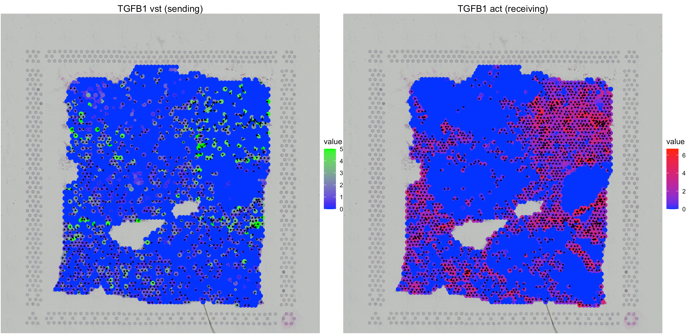
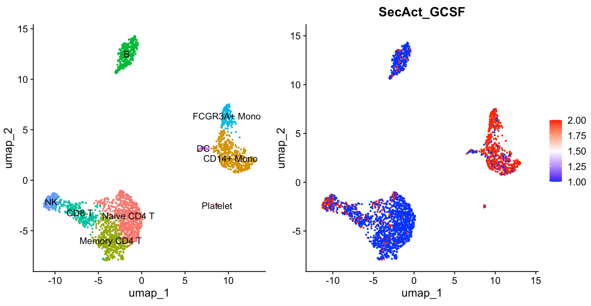

The goal of SecAct is to infer secreted proteins’ activity from RNA-seq data, including bulk, single-cell, and spatial data. Secreted proteins at the tumor microenvironment mediate the intercellular interaction among malignant, stromal, and immune cells, thereby influencing every stage of tumorigenic cascades. Currently, researchers are investigating the oncogenic role of secreted proteins through both conventional molecular experiments and high-throughput techniques like mass spectrometry or sequencing. However, the former is limited to studying only a few secreted proteins per study, while the latter loses the spatial position information of cells and molecules. Here, we propose an innovative analytical platform that leverages spatial transcriptomics, an emerging technology enabling comprehensive mapping of gene expression with spatial information in an intact tumor tissue, to spatially explore the activity and function of secreted proteins at the tumor microenvironment.
Installation
To install SecAct, we recommend using devtools:
# install.packages("devtools")
devtools::install_github("data2intelligence/SecAct")Or user can install SecAct from the source code. Click here to download it.
# install SecAct in the R environment.
install.packages("Path_to_the_source_code", repos = NULL, type="source")Example 1 (Input: expression matrix)
library(SecAct)
Yfile <- file.path(system.file(package = "SecAct"), "extdata/IFNG_GSE100093.diff")
Y <- read.table(Yfile,sep="\t",check.names=F)
res <- SecAct.inference(Y, lambda=10000, nrand=1000)
names(res)
## "beta" "se" "zscore" "pvalue"
head(res$beta[,1:2])
## IFNG.15d.AMG811.Lesional.180.mg IFNG.15d.Placebo.Lesional.0.mg
## Activin A -0.0054571949 -0.002227756
## BDNF -0.0165308969 -0.003590268
## BMP2 -0.0215501262 0.019876194
## BMP4 0.0039773755 0.003459698
## BMP6 0.0004974797 0.025879907
## CD40L -0.0051185785 0.001073442
head(res$zscore[,1:2])
## IFNG.15d.AMG811.Lesional.180.mg IFNG.15d.Placebo.Lesional.0.mg
## Activin A -1.2489955 -0.5632170
## BDNF -3.7953628 -0.7830596
## BMP2 -4.9343815 4.4209498
## BMP4 0.9777525 0.8402344
## BMP6 0.1167711 5.7487538
## CD40L -1.2868588 0.3233309Example 2 (Input: Visium data)
library(SpaCET)
visiumPath <- file.path(system.file(package = "SpaCET"), "extdata/Visium_BC")
SpaCET_obj <- create.SpaCET.object.10X(visiumPath = visiumPath)
SpaCET_obj <- SpaCET.quality.control(SpaCET_obj)
library(SecAct)
SpaCET_obj <- SecAct.inference(SpaCET_obj, lambda=10000, nrand=1000)
SpaCET_obj@results$SecAct_res$zscore[1:6,1:6]
## 50x102 59x19 14x94 47x13 73x43 61x97
## Activin A -0.05311363 2.4440663 -0.6858406 0.4543983 -1.1893773 0.3020815
## BDNF 0.52280289 1.2478663 -1.4952240 -1.3330523 -0.4755956 1.2212656
## BMP2 -0.30272668 -2.0417263 1.5261628 2.2138652 -3.3104354 -1.8805104
## BMP4 1.85152361 -0.1384111 -0.7384362 1.5279108 0.9950997 -1.0644863
## BMP6 -0.77698722 0.6405603 0.3362758 -0.6919639 1.1056869 1.2812108
## CD40L 0.52564266 -1.2222940 1.2872563 0.2879296 -1.6921668 0.3214071
SecAct.signalling.direction(SpaCET_obj, gene="TGFB1")
Example 3 (Input: single cell)
library(Seurat)
library(SeuratData)
InstallData("pbmc3k")
data("pbmc3k")
pbmc <- UpdateSeuratObject(pbmc3k)
pbmc[["percent.mt"]] <- PercentageFeatureSet(pbmc, pattern = "^MT-")
pbmc <- subset(pbmc, subset = nFeature_RNA > 200 & nFeature_RNA < 2500 & percent.mt < 5)
pbmc <- NormalizeData(pbmc, normalization.method = "LogNormalize", scale.factor = 10000)
pbmc <- FindVariableFeatures(pbmc, nfeatures = 2000)
all.genes <- rownames(pbmc)
pbmc <- ScaleData(pbmc, features = all.genes)
pbmc <- RunPCA(pbmc, features = VariableFeatures(object = pbmc))
pbmc <- FindNeighbors(pbmc, dims = 1:10)
pbmc <- FindClusters(pbmc, resolution = 0.5)
pbmc <- RunUMAP(pbmc, dims = 1:10)
new.cluster.ids <- c("Naive CD4 T", "CD14+ Mono", "Memory CD4 T", "B", "CD8 T", "FCGR3A+ Mono","NK", "DC", "Platelet")
names(new.cluster.ids) <- levels(pbmc)
pbmc <- RenameIdents(pbmc, new.cluster.ids)
library(SecAct)
pbmc <- SecAct.inference(pbmc, lambda=10000, nrand=10)
p1 <- DimPlot(pbmc, reduction = "umap", label = TRUE, pt.size = 0.5) + NoLegend()
p2 <- FeaturePlot(pbmc, features = "SecAct_GCSF", cols = c("blue","white","red"), pt.size = 0.5)
library(patchwork)
p1|p2